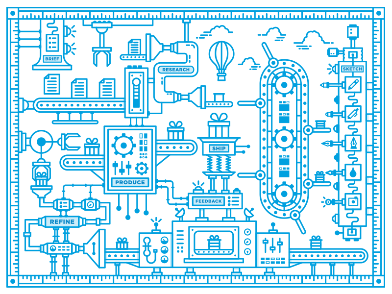

Primary 2.0
Solutions for a Better Tomorrow... Today!
#1.(Stop) Collaborate & Listen
What Does True Collaboration Look Like?
- Sharing perspectives, discovering new points of view
- Merging ideas to create stronger, well-rounded outcomes
- Learning each others' craft to become more versatille
- Providing feedback to grow as individuals and as a team
Healthy collaboration requires defining a common goal, thinking about the big picture and putting the project first as decisions are made
...Source: AdSubCulture
Further Reading
#2. Content is King
Great content isn’t stumbled upon,
it’s carefully designed for a specific goal.
If websites are essentially a vehicle for content delivery,
why do we disproportionately focus on visual design,
at the expense of the content?
"Design in the absence of content
is not design, it's decoration."
Obviously there's a place for beauty in a product.
But aesthetics aren’t the first thing that
we as web designers should tackle.
Design and content are equally important for success.
Giving them equal weight will dramatically increase the quality of your work.
Further reading
- Content Before Design: Creating Superior User Experiences
- How to convince clients to think about content before they think about graphics
- Why Good Content Must Always Come Before Good Design
- Web Designers Should Always Consider Content Before Design
- Content Before Design: 4 Steps to Better Websites
- Design Trends: Web Content Before Layout
- Content Before Design: Why it Matters
- Why It’s Important To Plan Content Before Designing a Website
- Writing Content Before Designing: Conversation Mapping
- Structure First. Content Always.
- What Should You Know About Content Before You Design?
- Copy Before or After Design?
- Which Comes First, Content or Design?
- Content Before Website Design
- Is Content Necessary Prior To Web Design?
- Content Comes Before Good Design
- Four Challenges of Content-First Web Design
- eBook: Content Strategy Project Guide
- eBook: Content Production Planning Workflow
#3. Get User-Centeric
It’s pretty likely that your client isn’t the main user of the website you are designing
...Even if they can clearly articulate their exact tastes and preferences, it’s beside the point because they are not the target audience.
Source: A List ApartUser-Centred Design (UCD) ensures a process focused on what users need before balancing this with technical and business requirements.
Source: Experience UXUCD Process
- Know the User
- Define the Problem
- Research the Competition
- Propose the Solution
- Test the Outcome
- Iterate the Design
Ask a few questions about who the end user is and what their needs are to better understand the target audience you are actually designing for.
Source: A List ApartUser-centered Questions
- Who exactly do you anticipate will be using this website?
- What will they accomplish by using this website?
- What are their pain points?
- What problem is this website solving for them?
(some) UCD Deliverables
- Competitive Analysis
- Audience Definition
- User Stories
- Content Audit
- Task Flows
- Wireframes
- Prototypes
- Usability Testing
- Some Real-World Examples
- Understanding How User Experience Designers Think And Work
- The Core Model: Designing Inside Out for Better Results
- 7 UX Design Trends That Will Rule the Roost in 2016
- Calculating the Value of UX Research
- Integrating UX in to a Growth Digital Agency
- User Centered Design Canvas Deconstructed
- Usability for Conversion: Stop Using Fads, Start Using Data
- What is User Research?
- UXdesign.cc Blog
- eBook: UX Design Collaboration in The Enterprise
Further Reading
#4. Well-Defined Roles

Choose your specialization. Do you want to focus on design, front-end coding, development, content, SEO, marketing or something else?
The Job of a Web Designer is Changing
Find Your Design Superpower
The key to finding and using your superpower is a mix of self-awareness, soliciting feedback from others, and communicating your limitations.
Source: FastCo. DesignFurther Reading
#5. Agile Proj Mgmt
Traditional waterfall methods for developing websites are rapidly declining in popularity.
Agile vs Waterfall: Comparing project management methodsAgile has 3x the success rate of traditional waterfall methods and a much lower percentage of time and cost overruns.
Agile Succeeds Three Times More Often Than Waterfall#6. Culture of Learning
The role of learning is to maximize PRIMARY's potential
by maximizing the potential of everyone working there.
PRIMARY, with neglected learning a culture, will ultimately fall behind competitors.
...PRIMARY, with a transformative culture of learning, thrives. At this organization, it’s understood that learning is a natural process, that people yearn to grow.
...Two Mindsets
- Avoid challenges
- Give up easily
- See effort as fruitless or worse
- Ignore useful negative feedback
- Feel threatened by the success of others
Fixed Mindset - Intelligence is Static
Leads to a desire to look smart and a tendency to...
As a result, they may plateau early and
achieve less than their full potential
- Embrace challenges
- Persist in the face of setbacks
- See effort as the path to mastery
- Learn from criticism
- Find lessons and inspiration in the success of others
Growth Mindset - Intelligence Can be Developed
Leads to a desire to learn and a tendency to...
As a result, they reach even higher
Have a Growth Mindset
The industry is rapidly changing, and to thrive, designers must be interested in learning and improving their process.
Building Generalist Design Teams"In times of change, learners inherit the earth,
while the others find themselves equipped to deal
with a world that no longer exists."
- Eric Hoffer
Thank You!
Thoughts? Questions? Concerns? Comments?